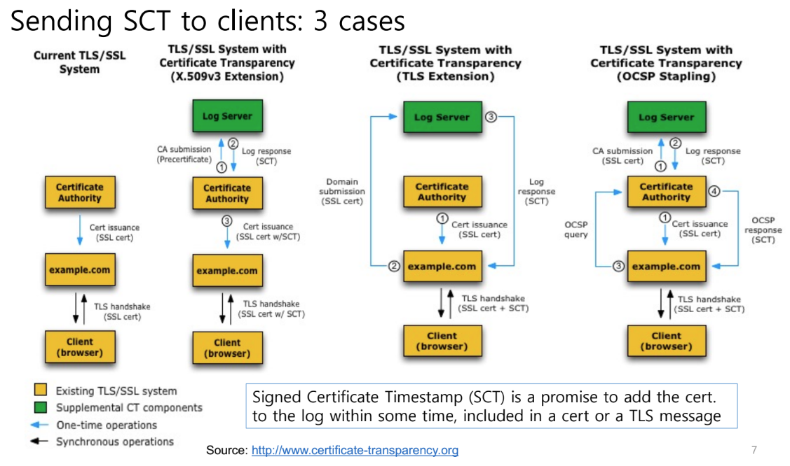
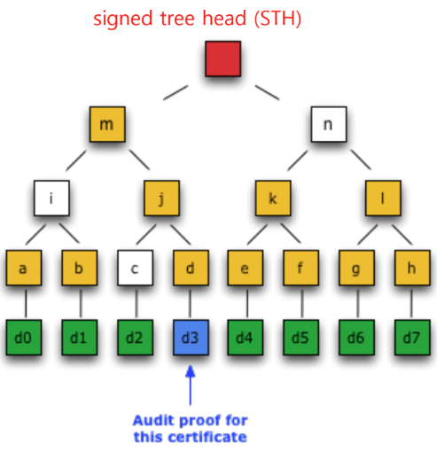

참고한 것들
소개
- 어떤 인증서 가 발급되었는지를 로깅하고, 그 로그들을 모니터링 해 악의적인 인증서가 발급되거나 잘못된 인증서가 있을 경우 알림을 해주는 시스템을 의미한다.
- 즉, 인증서에 대한 로깅 + 모니터링 시스템인 것.
- 이것을 통해 CA 가 compromise 되는 경우에도 대비할 수 있게 되는 것.
작동 원리
Overview
- 인증서가 로깅되고 모니터링 되어야 CA 가 이상한 짓을 못한다는게 기본 아이디어
- 이 로깅 작업을 강제하는 것은 browser 의 몫이다:
- Browser 는 TLS handshake 과정에서 이 인증서가 로깅되었다는 증거를 server 에게 요청하는 식으로 인증서가 로깅되는 것을 강제한다.
- 이 증거를 SCT (Signed Certificate Timestamp) 라고 부르고, 이것은 인증서에 포함되어 위변조가 불가능하도록 구현된다.
- 물론 backward compatibility 때문에 모든 browser 가 이것을 요청하지는 않는다.
CT enforce status (in 2024-05-28)
- Chrome 과 Chromium-based browser (Opera, MS Edge) 는 CT 가 강제된다. (Chrome 의 CT 정책, 관련 칼럼)
- Apple 의 Safari 에서도 CT 가 강제된다. (Apple 의 CT 정책)
- Firefox 에서는 현시점 (2024년 5월 28일) 기준, CT 를 강제하지는 않는다. (Bugzilla)
- 로깅이 강제된다는 전제 하에, server 가 browser 에게 SCT 를 인증서와 같이 줘야 하기 때문에 CA 는 인증서 발급시에 로깅 또한 수행하여 발급한 인증서와 SCT 를 같이 server 에게 전달해 준다.
- 다만 CA 가 직접 로깅을 하는 것은 아니다; 로깅하고 모니터링하는 것은 별도의 로깅 서버 (Logger) 가 담당하고, 따라서 CA 가 인증서를 로깅해달라고 Logger 에게 요청하면 Logger 가 SCT 를 생성해 CA 에게 전달하게 된다.
- 이렇게 모인 로그를 모니터링 서버 (Monitor) 가 감시하며 이상한 인증서는 없는지 확인하게 된다.
Implementation Detail
- 위의 overview 는 이해의 편의를 위해 요약한 것이고, 실제로는 아래와 같은 디테일이 있다.
1. SCT: Promise for Logging
- SCT 는 인증서 로깅의 증거이긴 하지만, 인증서가 로깅되었다는 것을 보증하는 것이 아닌 인증서가 곧 로깅될 것이라는 것을 보증한다.
- 즉, SCT 가 생성된 시점에는 아직 해당 인증서가 로깅되지는 않은 것.
- 정확하게는 SCT 가 보증하는 것은
- CA 가 Logger 에게 로깅을 해달라고 “요청” 했다는 사실
- 인증서가 MMD (Maximum Merge Delay) 안에는 로깅될 것이라는 사실
- 그 이유는 로깅 과정을 async 하게 하기 위해서이다.
- 로깅은 대부분 빠르게 완료되지만, 그럼에도 불구하고 지연이 생길 수도 있고, 이것이 인증서 생성을 지연시키는 것을 방지하기 위해 로깅 요청이 들어오자마자 SCT 를 응답하는 async 방식을 사용한다.
- 그리고 실제로 이것이 로깅이 완료되었다는 것은 Monitor 에 의해 알림을 받게 된다.
2. Precertificate
- CA 는 인증서를 발급하여 Logger 에게 그것을 전달해 주기는 하지만, server 에게 전달하는 인증서와는 살짝 다르다. (이것을 Precertificate 라고 한다.)
- Precertificate 은 server 에게 전달하기 위한 인증서 (실제 TLS handshake 에도 사용할 수 있는) 에다가 Poison Extension 을 추가한 인증서이다.
- Poison Extension 은 이 인증서가 server 에 의해 사용되어서는 안된다는 것 (즉, TLS handshake 등의 목적으로 사용되서는 안된다는 것) 을 명시한다.
- 즉, Logger 에게 전달되는 인증서인 Precertificate 은 발급한 인증서의 모든 내용이 포함되어 있지만, 사용 용도만 제한되어 있는 인증서인 셈.
- 이것이 필요한 이유는 인증서와 SCT 간에는 순환 의존 관계 (Dependency Loop, Deadlock) 가 있기 때문이다.
- 인증서 로깅이 요청되면 그때 SCT 이 생성된다. 즉, SCT 는 인증서에 의존하고 있다.
- 하지만 server 에게 전달할 인증서에는 SCT 가 포함된다. 즉, 인증서는 SCT 에 의존하고 있다.
- 따라서 서로를 의존하고 있기 때문에, server 에게 전달해 줄 인증서와 로깅할 인증서를 분리하게 되는 것.
3. SCT delivery options

- SCT 를 browser 에게 전달하는 것은 인증서에 포함시키는 방법 외에 인증서에 포함시키지 않는 옵션 두가지가 더 있다.
- (1) server 가 직접 Logger 에게 연락해서 가져오게 하거나
- (2) OCSP stapling 을 이용해 server 가 CA 에게서 가져오거나
4. Append-only Merkle tree
- Logger 는 로그를 관리하기 위한 자료구조로 Merkle Tree 를 사용한다.
- CT 에서 Merkle tree 의 leaf 는 각 인증서의 hash 값이다.
- 이것은 어떤 인증서가 로깅되어 있음을 이 자료구조로 cryptographic 하게 증명할 수 있기 때문이다.
Consistency Proof
- Consistency proof 는 두 버전의 CT Merkle tree 가 consistent 하다, 즉, 기존 로그에의 변경이 없다라는 것을 증명하는 것이다.
- 라고 하면 살짝 감이 안올테니 다음의 예를 생각해 보자.

- 위의 예시를 보면, 이전 버전의 Merkle tree 의 root hash 는
m이고 새로운 로그들 (d4,d5) 을 append 이후의 새로운 버전의 Merkle tree root hash 는 저 빨간색 (편의를 위해r라고 해보자) 이다. - 따라서 기존 버전
m, 새로운 버전r, 추가된 로그d4,d5을 알고 있을 때, m, d4, d5 로 계산한 root hash 값이r과 동일한지 확인하는 것으로 새로운 버전에 기존 버전의 로그들이 변경되지 않고 반영되어 있는지를 검증할 수 있는 것이다. - 이 consistency 는 Monitor 입장에서 의미가 있다.
- “이전 버전” 은 이미 검토가 끝난 로그들이고, 새로 추가된 로그들은 검토하지 않은 로그들이다.
- 이때 “새로운 버전” 을 검토가 끝난 로그들의 집합이 되게 하기 위해서는,
- (1) 새로 추가된 로그들을 검토
- (2) 기존 버전이 변경되지 않음
- 두 작업만 하면 되기 때문
Inclusion Proof
이부분은 졸려서 약간 글이 난잡합니다,,
- 어떤 인증서가 Logger 에 로깅되어 있는지 확인하기 위해서는, root 까지 가는 경로 상의 hash 들을 logger 에게 요청하면 된다.
- 인증서와 경로상의 hash 들을 이용해 root hash 를 직접 계산해 보고,
- 이것이 Logger 의 현재 root hash 값과 일치한다면,
- 이 인증서가 정상적으로 로깅되어 있음을 확인할 수 있다.
- 이때 root hash 가 변조되지 않은 값이라는 것은 그냥 서명을 이용해 검증한다.
- 따라서 Logger 는 Merkle tree root 를 서명하여 공개하게 되고, 이것을 Signed Tree Head (STH) 라고 한다.
- 따라서 검증을 원하는 놈은 Logger 가 공개한 STH 와 인증서를 가지고서, Logger 에게 경로상의 hash 들을 내놓으라고 하면 된다.
- 만일 Logger 가 hash 들을 응답하고, 계산해봤을 때 STH 의 root hash 와 일치한다면, 로깅이 되었다는 것이 증명된 것.
- 왜냐면 hash 값은 예상할 수 없기 때문이다 - 만일 로깅이 되어 있지 않다면 STH 의 root hash 가 나오도록 경로상의 hash 를 주작쳐야 하는데, 이것은 불가능하기 때문.
- 이렇게 하면 모든 로그를 linear 하게 탐색하여 로깅이 되었는지 확인하는 것보다 훨씬 빠르게 로깅의 여부를 검증할 수 있다.
- 이것은 CT 를 강제하고자 하는 (그래서 인증서가 무조건 로깅되게 하려는) browser 입장에서 의미가 있다.
- 예를 들어보자: Logger 의 Merkle tree 가 다음과 같다고 해보자.

- 이때 김씨는 인증서
d3과 Logger 가 공개한 STH 값을 알고 있고, Logger 에게 경로상의 hash 를 내놓으라고 할 것이다. - 그러면 Logger 는
c,i,n을 응답할 것이고, 김씨는 다음의 수식이 맞는지만 확인하면 된다.
hash(hash(hash(hash(d3) + c) + i) + n) == STH
- 이 방법은 Logger 가 김씨에게
d0~d7전부를 줘서 검증하는 것보다 훨씬 간단하게 수행할 수 있다.
5. Multi-logger
- CA 는 HA 를 위해 하나의 Logger 가 아닌 여러 Logger 에 인증서 로깅을 한다.
- 따라서 하나의 인증서에 대해서는 여러 SCT 가 생성되고,
- 크롬 기준 인증서가 생성된지 180일이 넘은 것은 3개의 SCT 가, 안념은 것은 2개의 SCT 가 존재해야 valid 한 것으로 간주한다.